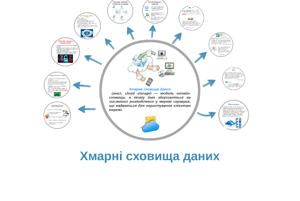
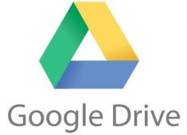
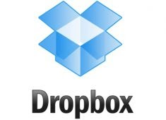
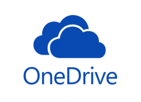
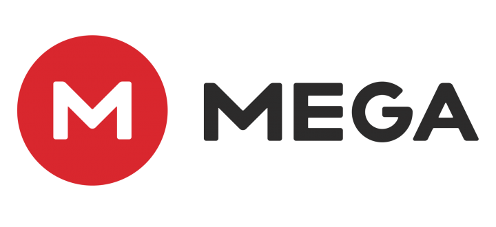
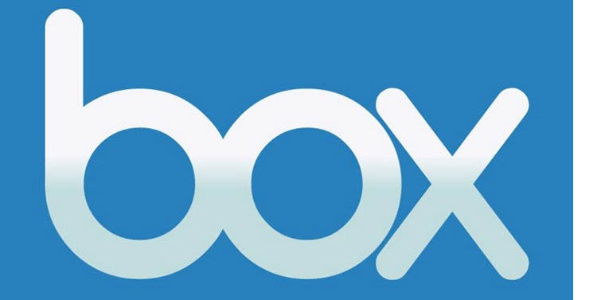
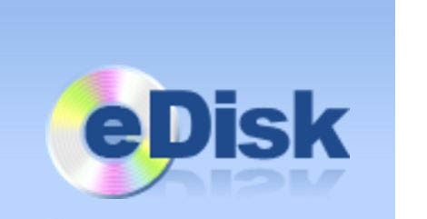
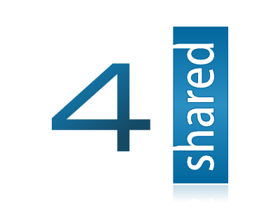

Теоретична частина

Популярність хмарних сховищ набирає обертів. Найвідоміші сьогодні сервіси для зберігання файлів в хмарі: DropBox, OneDrive, Google Drive, iCloud.
Використання спеціалізованих інтернет-сервісів для зберігання та обміну файлами вирішує кілька проблем. По-перше, ви резервуєте свої дані, по-друге, можете обмінюватися файлами з іншими людьми або організувати спільну роботу над документами.
Google Drive

«Хмара» від Google пропонує 15 ГБ дискового простору. Але майте на увазі, що цей обсяг ділиться між усіма сервісами Google: Gmail, «Google фото», «Google документи» тощо. Також ці гігабайти використовуються для зберігання резервної копії даних Android-пристроїв.
Доступ до Google Drive надається як через веб-інтерфейс, так і за допомогою додатків для платформ Windows, Mac OS, Android та iOS.
Dropbox

Базово користувачеві надається 2 ГБ дискового простору безплатно. Додатковий обсяг можна отримати, розпочавши використання мобільних додатків Dropbox. Система запрошень дозволяє збільшити обсяг хмарного сховища до 16 ГБ – по 500 МБ за кожного користувача. Завдяки спільним акціям з різними компаніями користувачі мають змогу зберігати додатково десятки гігабайтів даних, щоправда, такі щедроти діють обмежений час.
Dropbox має вбудовані інструменти автоматичного завантаження з камери гаджета, перегляду офісних документів, відображення каталогів з фото у вигляді галерей та чимало інших корисних функцій.
Недолік сервісу – постійна зміна умов отримання додаткового простору та не завжди надійний захист користувацьких даних.
Робота з Dropbox можлива через веб-інтерфейс та додатки для Windows, Mac OS, Android, Linux та iOS.
OneDrive

OneDrive – перейменований у лютому 2014 сервіс Microsoft SkyDrive, який базується на «хмарній» організації зберігання даних з функціями обміну файлами. Сервіс OneDrive відразу інтегрований з платформою Office 365 і дозволяє створювати, редагувати та зберігати файли Excel, OneNote, PowerPoint і Word.
Сервіс OneDrive дозволяє зберігати на даний час безплатно 5 ГБ (хоча раніше пропонувалося 15 ГБ) інформації в упорядкованому за допомогою стандартних папок вигляді. Для зображень доступний попередній перегляд у вигляді ескізів, а також їхній перегляд у вигляді слайдів.
Сервіс доступний як через веб-інтерфейс, так і за допомогою додатків для Windows, Mac OS, Android, iOS.
Mega

«Хмара» Mega (Mega Encrypted Global Access) – амбітний сервіс обміну файлами від Кіма Доткома (Kim Dotcom), засновника легендарного Megaupload.
Головна особливість Mega – у високій конфіденційності: весь контент шифрується прямо в браузері за допомогою алгоритму AES. Користувачі можуть передавати один одному файли в зашифрованому вигляді, але при цьому всі дані зберігаються в «хмарі». Ключі доступу до файлів не публікуються у відкритому доступі, а поширюються за схемою Friend-to-Friend, шляхом обміну між користувачами, які довіряють один одному.
Сервіс доступний у вигляді розширень до браузерів Firefox, Chrome та додатків для Windows, Mac OS, Android, Linux.
Box.net

«Хмарне» сховище даних, яке дозволяє зберігати файли, а також організовувати спільну роботу над документами. Сервіс має вбудовані інструменти перегляду офісних документів а також можливість надавати спільний доступ до файлів або папок прямо з мобільного пристрою. Розробникам вдалося інтегрувати в мобільний додаток нативний пошук Android, за рахунок чого пошук файлів став швидшим і точнішим.
Для персонального використання Box.net надає 10 ГБ «хмарного» простору, але максимальний обсяг файлу, який можна завантажити у «хмару», становить 250 МБ.
Box.net доступний через веб-інтерфейс та додатки для популярних мобільних платформ.
eDisk

Просте веб-сховище обсягом 4 ГБ, яке надається користувачам пошти від ukr.net. Робота із сервісом здійснюється лише через веб-інтерфейс, який нагадує звичний менеджер файлів. Підтримуються основні операції з файлами: перегляд (не для документів), переміщення, копіювання, видалення. Видалені файли опиняються в «кошику», також присутня можливість відновлення.
Спільний доступ до файлів можливий лише для зареєстрованих користувачів порталу ukr.net.
4shared

«Хмарний» сервіс для зберігання та обміну файлами з веб-інтерфейсом, який нагадує стандартний переглядач Windows. Спочатку користувач має в розпорядженні безплатні 10 ГБ простору, а після підтвердження адреси електронної пошти доступний обсяг збільшується на 5 ГБ.
Після завантаження файлу користувач отримує унікальне посилання, за яким згодом інші користувачі зможуть завантажити файл. Усі завантажені файли зберігаються протягом 180 днів із часу останнього відвідування облікового запису. Файли преміум-користувачів зберігаються на весь термін дії облікового запису.